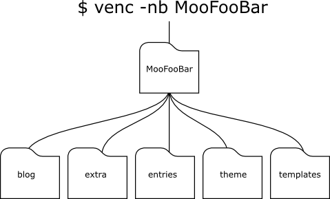
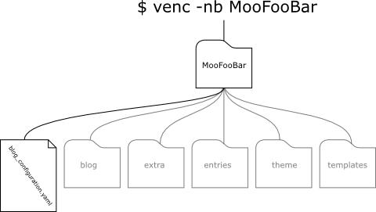

Présentation
VenC est une application python conçu par Denis Salem similaire à Octopress/Jekyll pour gérer et créer vos blogs statique via la console.
Avec VenC, tout est fichier texte, pas de base de donnée.
La configuration de chaque blog repose sur un unique et petit fichier Yaml,
les thèmes consistent en une poignée de templates html à modifier ou
créer soit même, les publications quand à elles se présentent pour l'étentiel sous la forme de texte libre.
Les blogs statiques sont tout à fait adaptés aux darknets ou ceux qui veulent un controle totale sur leur site
sans s'embarrasser de CMS lourd et potentiellement vulnérable en terme de sécurité. Par ailleurs, l'extrême simplicité de
l'organisation des sources des blogs issus de VenC garantie une prise en main rapide et efficace.
Installation
En premier lieu il convient de s'assurer que python 3.x est installé. VenC a également des dépendances qu'il faut satisfaire:
Pour une installation plus facile vous pourriez vouloir utiliser pip
- Python-Markdown
- Vous pouvez jeter un oeil à la page officiel ou directement tapez la commande pip install markdown dans un terminal en étant root.
Prise en main
Cette partie fait le tour des principales propriétés de VenC
Arborescence
Lorsque vous créez un nouveau projet, VenC produit un certains nombre de répertoire. La racine du projet porte le nom du blog, par exemple, "MooFooBar". Ce répertoire en contient cinq autres.
- blog: le dossier où est exporté le projet.
- extra: un dossier contenant des ressources quelquonque copiées vers blog/ au moment de l'exportation.
- entries: Contient toutes les publications sous forme de fichiers texte numérotés et datés.
- theme: Contient les templates html, les feuilles de style et éventuellement les scripts JS.
- templates: Contient des modèles vierge de publication.

Structures des fichiers
blog_configuration.yaml
Il s'agit d'un document Yaml à la racine du projet définissant les propriétés du blog, comme
son titre, le nom de son auteur, ainsi que des détails fonctionnels comme le nombre de publications par
pages ou l'ordre d'affichage de celles-ci. Immédiatement après avoir crée votre blog, il s'agira
sans doute du premier fichier que vous éditerez. Une fois avoir remplit ses champs dont l'usage est détaillé plus bas, vous n'aurez normalement plus besoin d'y retoucher.
Comme dans d'autres contexte de VenC. Le fichier de configuration du blog fait appelle à des
variable d'environnnement, dont l'utilisation est détaillé dans la section approprié.

- blog_name
- Sans surprise, il s'agit du titre de votre blog.
- author_name
-
- Le nom de l'administrateur ou l'auteur du blog.
- blog_description
- Un très cours résumé de ce dont parle votre site.
- blog_keywords
- Les mots clefs associés au site.
- author_description
- Un cours texte à propos de l'auteur du blog.
- license
- La licence appliquée au contenu de votre site.
- url
- L'url du blog.
- blog_language
- Définit la langue du site.
- email
- Votre adresse e-mail.
- path
-
Ces champs ne devraient pas être modifié dans la plupart des cas. Maisi il
peut être bon d'en saisir le fonctionnement.
- root
- "./" par défaut. Le chemins où sera exporté tout le blog à l'intérieur du répertoire blog/.
- index_file_name
- "index{page_number}.html" par défaut.
Le nom de fichier formaté des pages du fil principale de publication. Devrait toujours contenir la variable {page_number}.
- categories_directory_name
- "{category}" par défaut. Définit le répertoire où sera exporté un fil de
publication spécifique à une catégorie de publication. Ce champ devrait donc toujours contenir la variable {category}.
- tags_directory_name
- "{tag}" par défaut. Définit le répertoire où sera exporté un fil de
publication spécifique à un mot clef. Ce champ devrait donc toujours contenir la variable {tag}.
- authors_directory_name
- "{author}" par défaut. Définit le répertoire où sera exporté un fil de
publication spécifique à un auteur. Ce champ devrait donc toujours contenir la variable {auteur}.
- dates_directory_name
- "%Y-%m" par défaut. Définit le format de date utilisé pour les nom de répertoires de fils de publications associés à des dates.
- entry_file_name
- "entry{entry_id}.html" par défaut. Définit le nom de fichier
d'une publication unique. Ce champ devrait toujours contenir la variable {entry_id}.
- rss_file_name
- "feed.xml" par défaut. Définit le nom de fichier du flux rss.
- entries_per_pages
- "10" par défaut. Définit évidément le nombre de publication par page.
- columns
- "1" par défaut. Propriété interessante de VenC détaillé plus loin dans la documentation. Ce champ définit le nombre de colunm dans une page.
- rss_thread_lenght
- "5" par défaut. Définit le nombre de publication à afficher dans le flux RSS.
-
- thread_order
- "oldest first" par défaut. Définit l'ordre de publication. Du plus anciens au plus récent, ou l'inverse. Ce champ ne peut prendre comme valeur "oldest first" ou "latest first".
Variables d'environnement.
Comme il l'a été dit dans la section précédente, certains contextes peuvent faire usage de variables. Le tableau ci dessou en définit l'utilisation et le contexte approprié.
| Variable |
Champ/Contexte |
| {page_number} |
index_file_name |
| {category} |
categories_directory_name |
| {tag} |
tags_directory_name |
| {author} |
authors_directory_name |
| {entry_id} |
entry_file_name |